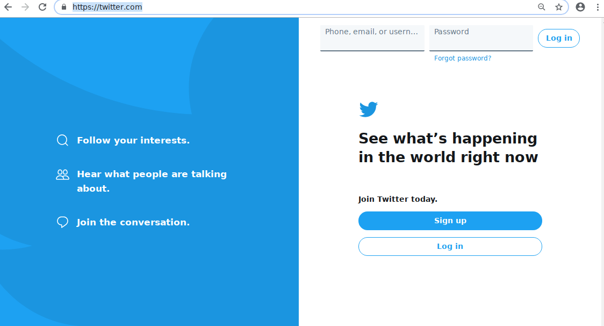

Selective Attention
Focusing on specific stimuli while filtering out everything else. Users can only consciously process a small amount of information at once.
- → Focus is limited. Prioritize key elements. Minimize visual noise and competing calls to action.
- → Overload impairs performance. Too much competing information overwhelms users. Simplify layouts and use visual hierarchy to guide attention to what matters.
Twitter got it wrong, then fixed it.
Selective attention can only serve one goal at a time. Put two competing paths on the same screen and users freeze, unsure which one is theirs.

Login form at top right and separate sign-up/log-in buttons below. Two paths, zero clarity.

One modal, one task. Sign up is the primary action; login is a secondary link below.
F-Pattern
Users read horizontally across the top, then scan down the left side, making progressively shorter horizontal sweeps.
- → Most reliable for text-heavy content: search results, article feeds, listings.
- → Less universal than originally framed. Users with strong task focus or high content interest frequently deviate from it.
Z-Pattern
The eye sweeps horizontally across the top, then diagonally down to the bottom-left, then horizontally across again, tracing a Z shape.
- → Common on pages with limited body text and strong visual hierarchy: landing pages, hero sections, posters.
- → Useful when you want the eye to naturally arrive at a call to action at the bottom right.
Spotted Pattern
Users look for specific items or keywords, skipping irrelevant content entirely. Their eye jumps between visual anchors: headings, images, labels, prices.
- → Design for this with strong visual hierarchy and clear labeling. Scale, color, animation, and imagery all serve as anchors.
- → Common in ecommerce, searchable databases, and reference sites.
Commitment Pattern
Users read most or all of the content, every word in every line. This only happens when users are genuinely motivated to absorb the full piece.
- → Common on news sites, long-form editorial, magazine features, and technical documentation.
- → Design for it with legible typefaces, strong contrast, and comfortable line length (~60–70 characters).